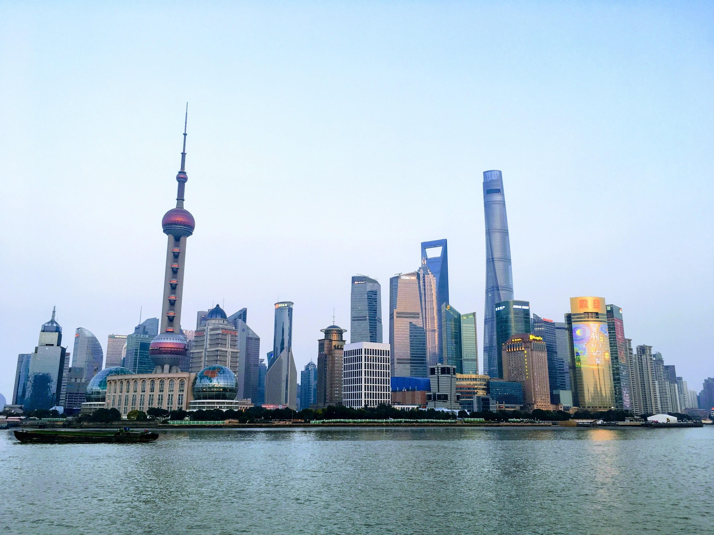
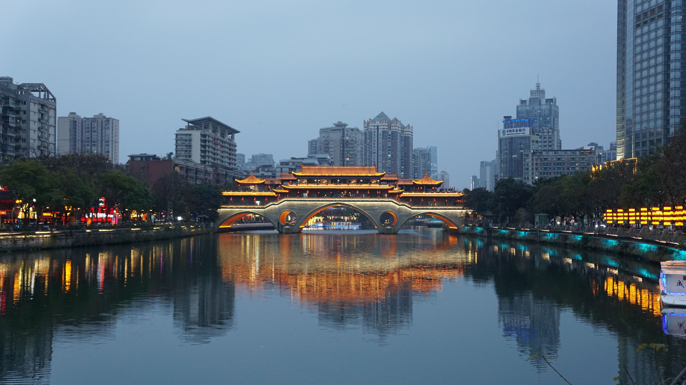
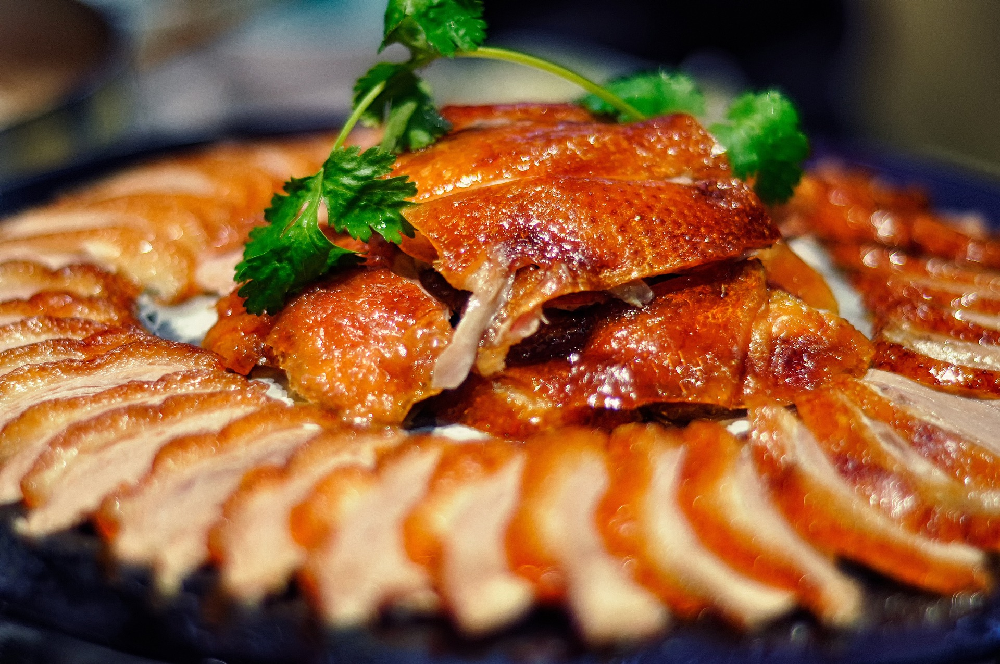
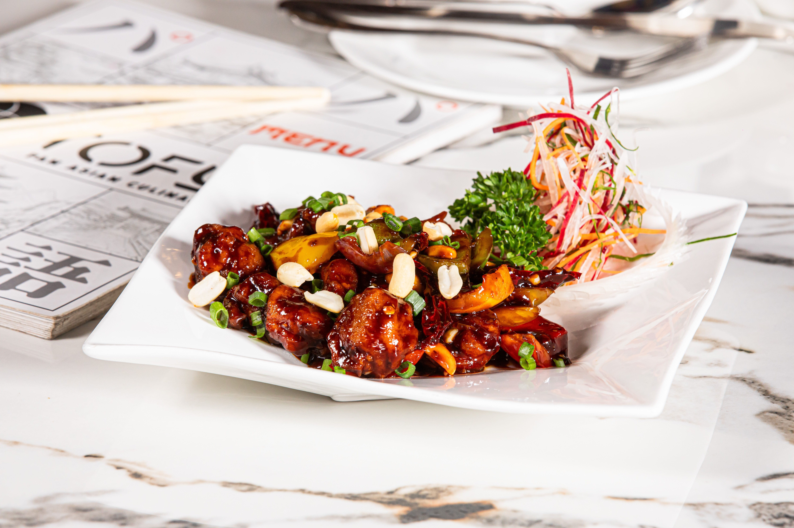
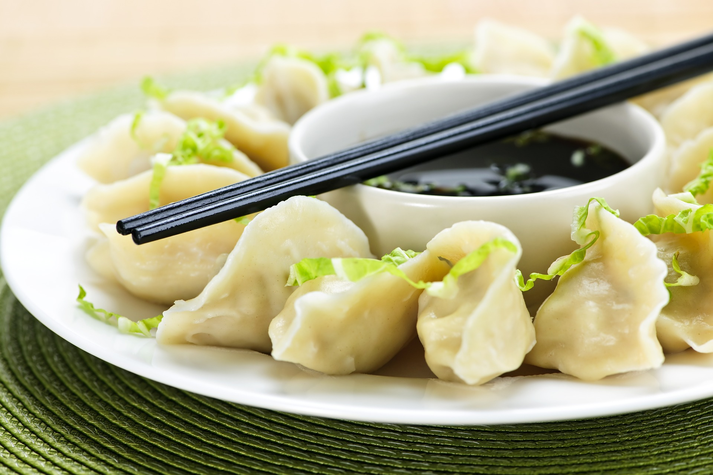

About

China, known officially as the People's Republic of China, is a vast and populous country in Eastern Asia; it has mountainous landscapes, iconic architecture, cutting-edge innovation, and one of the world's oldest living civilizations.
Places
China is a vast, mountainous country with a rich and historic culture. Furthermore, it is built upon over 20+ provinces, 700+ cities, all across 7.6 million square kilometers. That being said, picking favourite cities is difficult, but here are some of mine:
-
Shanghai (上海/shànghǎi)

Photo by: @John_Appleseed, Pixabay - East
- Fun fact: Shanghai is the most populous urban area
- Highly-developed major global financial center
- Rich culture & food
-
Chengdu (成都/chéngdū)

Photo by: Tetovált Kínai, Pexels - Southwest
- Fun fact: Chengdu is known historically as the "Land of Abundance"
- Capital city of Sichuan Province (四川省/sìchuān shěng)
- The cradle, capital, and primary birthplace of Sichuan (also sometimes referred to as 'Szechuan') cuisine
-
Beijing (北京/běijīng)
Photo by: @jeremy888, Pixabay - North
- Fun fact: the name literally translates to "Northern Capital" in English
- China's policitical, cultural, technological hub.
- Home of The Forbidden City (故宫/gùgōng)
Foods
China is quite well known for its food, whether it's the traditional food of the local restaurants, or the westernized cuisine of Panda Express, there are options for absolutely everyone. There is no list that is long enough for all of the delicious Chinese dishes, but these are some of my favourite dishes that originate from various parts of China:
-
Peking Duck (北京烤鸭/běijīng kǎoyā)

Photo by: @yangtao1009, Pixabay - Fun fact: Although closely associated with Beijing, its earliest roots trace back earlier to Nanjing
- Crispy, glassy, amber skin
- Delicious, tender meat
- One of China's most celebrated national dishes
-
Kung Pao Chicken (宫保鸡丁/gōngbǎo jīdīng)

Photo by: Anil Sharma, Pexels - Fun fact: Named after Ding Baozhen, a Qing dynasty governor whose family name (丁/dīng) literally translates to "small cubes," making a delightful pun, as (鸡/jī) translates to "chicken" and diced chicken serves as the main ingredient of the dish
- Spicy, sweet, sour, and savory
- Diced chicken, crunchy roasted peanuts, and a colourful mix of dried red chilies, scallions, and garlic
- One of China's most classic dishes
-
Jiaozi (饺子/jiǎozi)

Photo by: @xiuqilong, Pixabay - Fun fact: Deliberately shaped to resemble traditional Chinese silver ingots (元宝/yuánbǎo)
- Savory, juicy, and comforting
- Minced pork or beef, finely chopped cabbage or chives, wrapped in a thin dough skin
- The quintessential comfort food of Northern China